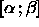
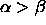

This function initializes all weights and the bias with distributed random values. The values are chosen from the interval


 and
and  have to be provided in field1 and field2 of the
init panel. It is required that
have to be provided in field1 and field2 of the
init panel. It is required that